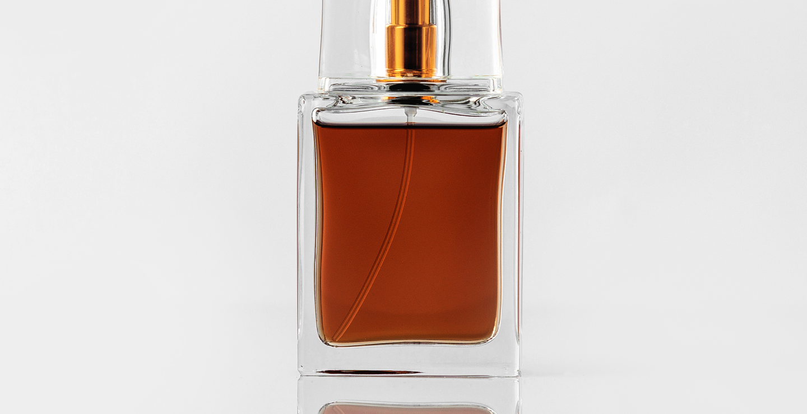

Historia del perfume
La palabra “perfume” o “perfumes” deriva del latín “per” y “fumare”, que significa producir humo, haciendo referencia a las sustancias aromáticas que desprendía un humo al ser quemado, usado para aromatizar. Actualmente, la palabra “perfume” se refiere al líquido aromático que usa una mujer o un hombre, para desprender olores agradables.
Ramón Planas y Buera tiene un Museo del Perfume en Barcelona donde encontraremos entre su maravillosa colección una gran variedad en cuanto a perfumes hombre y perfumes mujer. y sostiene la teoría de que “todo comenzó en la prehistoria, el día que uno de aquellos hombre primitivos encendió una hoguera para calentarse o para alejar las fieras que pudieran acecharle y, por pura casualidad, encendió algunas ramas o resinas de un árbol y éstas comenzaron a desprender un olor agradable, un olor inédito que nunca antes había sentido nadie. Quizás el hecho de encontrarla tan agradable y de que el humo se elevase al cielo, les hizo pensar en utilizarlo como ofrenda a las divinidades”.
El arte de la elaboración de perfumes nació en Egipto, desarrollado posteriormente por los árabes y los romanos. Dentro de Europa, todo comenzó durante el Renacimiento, especialmente en Francia, a mediados del siglo XIV. Ya que se cultivaron flores para elaborar los perfumes. Por lo tanto, pasa a ser el imperio de los perfumes. Con el tiempo, se instalaron los primeros minúsculos laboratorios de perfumistas en los que se dedicaban a elaborar y vender sus propios preparados aromáticos. No obstante, los preparados aromáticos eran exclusivamente para sus clientes, dependiendo de sus gustos y peticiones.
Con el tiempo se fue extendiendo el consumo de aguas de olor, concretamente, las cortes de los reyes de Francia, Luis XIV y Luis XV, fueron grandes consumidores de esencias. La historia dice que se veían un poco obligados para ocultar la falta de higiene y los malos olores de la época. Durante la revolución francesa se estancó el mercado de la perfumería. Sin embargo, la guillotina en esos tiempos hizo rodar las cabezas perfumadas de la nobleza, dando nombre a un nuevo aroma llamado “Guillotine”.
Naturalmente, con la llamada al trono de Napoleón comenzó una expansión para los perfumes. En este momento los perfumistas se convertirían en una gran industria, proporcionando puestos de trabajo y naturalmente, dinero. En este punto, lo importante ya no sólo era la fragancia, sino que también se debía tener en cuenta el frasco, el envoltorio y la publicidad. En relación a España, en el sur, los guanteros fueron los pioneros ya que vendían los frascos junto a los guantes perfumados.
En relación a la cosmetica, los griegos fueron los causantes en introducir sus costumbres desde el Cercano Oriente hasta España. Los primeros barberos y perfumistas fueron griegos que se instalaron en Roma durante la época de la República. El papel más importante de los griegos fue aplicar el arte que tenían para crear frascos de cerámica con el fin de guardar ahí los perfumes, hasta hoy difíciles de igualar.
Diseñaron siete frascos diferentes para guardar los perfumes y aparte, los decoraban con animales mitológicos, figuras geométricas y escenas ceremoniales. Por otro lado, el cristianismo retrocede la utilización de los perfumes y cosméticos ya que consideraban que eran “artimañas del diablo utilizadas por las mujeres para seducir a los hombres”.
Hoy en día, en el siglo XXI, el mercado tiene otras necesidades. Antes era los catadores de fragancias “narices”, quienes determinaban el rumbo de una moda, ahora ellos deben tener atención al departamento de marketing. Actualmente, la perfumería está creciendo a unos ritmos desenfrenados. Cada vez salen más marcas de perfumería y cosmética y no hay cabida para todos. Junto a las perfumerías on-line ha aparecido otro modelo de negocio del sector que está causando furor entre los consumidores de niveles socioeconómicos elevados. Son lo que llaman “perfumerías nicho”, dónde se pueden encontrar las marcas más exclusivas y las que no se distribuyen en las perfumerías tradicionales.